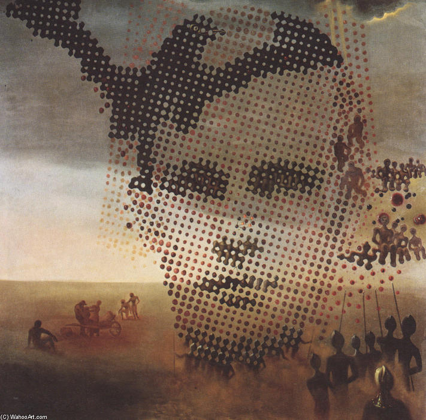
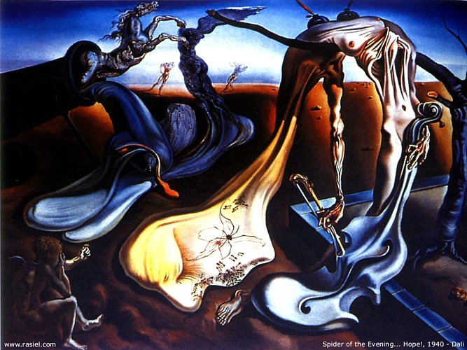
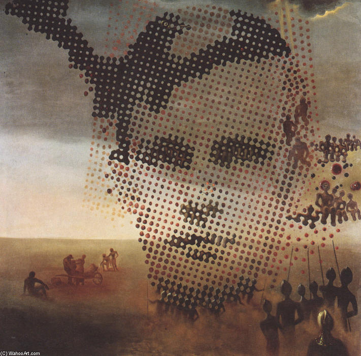
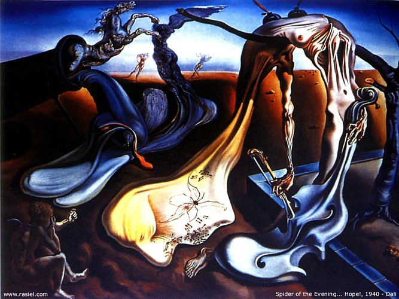

salvador dalì
Figlio di un notaio, Salvador Dalì nasce in Catalogna, nella città di Figueras nel 1904. Già da bambino sviluppa doti eccezionali nel disegno. È molto legato alla madre, che muore nel 1921, e ha un rapporto estremamente conflittuale con il padre, rigido e autoritario.Viene accettato all’accademia di belle arti di Madrid e nel convitto universitario incontra quelli che saranno i suoi migliori amici: Federico Garcĺa Lorca e Luis Buñel. Al primo Salvador Dalì sarà legato da una profondissima amicizia e con lui trascorrerà una memorabile vacanza a Cadaqués, con il secondo affronterà l’avventura nel mondo del cinema. Lorca sarà anche il primo ad intuire con precisione la vicinanza del giovane pittore al linguaggio surrealista, alcuni passi dell’ode che compone in suo onore descrivono il suo processo creativo da cui le immagini scaturiscono liberamente l’una dall’altra, si associano in modo automatico.

 


